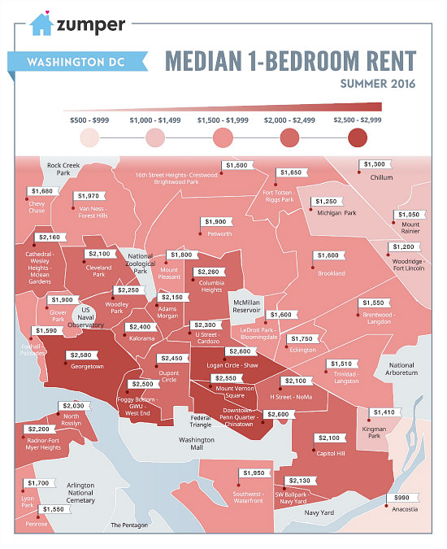

All Those Reports About DC Rents? Best to Take Them With a Grain of Salt
Kate Rabinowitz // September 2, 2016 // as featured in UrbanTurf
On a weekly basis, the email inbox at UrbanTurf is filled with new reports and studies from rental and real estate start-ups highlighting one trend or another about DC’s housing market. Asked by the popular real estate blog to look into the methodology behind these reports, I found a lot to be desired.

RadPad, an apartment finder website, recently had a post that explored where renters in DC are the most cost-burdened. To find the percentage of income that apartment dwellers spend on rent, RadPad used the rents of apartments listed on their site along with publicly available income and tax data. However, RadPad limited the rents analyzed in the report to one-bedroom apartments, and used only the last 30 days of listings to determine median rent. This creates a sample of 1,000+ listings, according to RadPad, but in some neighborhoods and zip codes the listings numbered less than twenty.
Limiting the report to apartments available for rent on the site excludes currently rented apartments, leaving out long-term, likely lower priced rentals, and creating a bias towards a higher rent estimate as the landlords who typically list apartments on RadPad are those that have apartments in recently-constructed buildings. Online rental websites like RadPad also tend to skew towards a younger, wealthier clientele with overrepresentation of “hot” markets like Shaw and Logan Circle and underrepresentation of less expensive markets. (More on this in the next section.)
For median income estimates, RadPad used Census data collected from 2010 to 2014. This long collection period means the data is more reliable, but also less current. The median income also encompasses single-filer data for both renters and owners. Owners generally are in a higher income bracket, so this would skew the income estimate upward.

Like RadPad, the website Zumper publishes rent reports based on the prior month of listings on the site. It regularly produces a map of median one-bedroom rents for DC area neighborhoods to give potential renters a sense of how far their budgets can take them across the region. While their population appears larger than RadPad — Zumper reported roughly 7,500 active one-bedroom listings a month in the region — the same bias exists. Zumper’s reported median rent leaves out currently rented apartments, offline rentals, and rentals in buildings that do not use their site.
Like Radpad, Zumper’s audience skews toward a younger and wealthier demographic, which is indicative in Zumper’s maps. They purportedly show DC but exclude all but one neighborhood east of the Anacostia River, while including Virginia and Maryland suburbs. In February 2015, Zumper told DCist the exclusion was “nothing deliberate,” rather it was the first time one of Zumper’s designers put together a DC map, “so they drew the boundary at the river.” Today, Zumper states that it is working to expand the map, but that additional neighborhoods make the map look too cramped. While this is an explanation, it is more likely the result of a low volume of listings. A recent search on Zumper showed 75 percent of neighborhoods not shown on their map have ten or fewer listings.
Rental websites like RadPad and Zumper are very good at reporting the median rent for listings on their site, but this is not the same as the true DC rental rate. And this should be kept in mind when considering the conclusions in their reports.